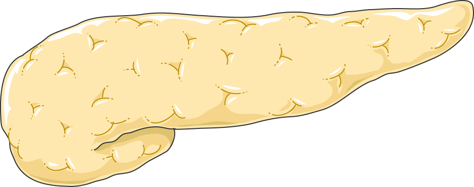

血糖项目主要看什么？
身体的能量，如何保持平衡？

底色是纸，绿色只做唯一强调色；层级靠发丝线、字号和编号，不靠卡片套卡片。编号 01–09 直接取自内容数据，让没有封面的内容也立得住；五张 CC BY 4.0 器官插图是唯一大图。所有文案、条目与来源均为线上真实内容。
血糖检查观察的是血液中葡萄糖的状态，不同项目（空腹、糖化血红蛋白、糖耐量）回答的是不同时间范围的问题。
空腹、餐后和随机血糖的解读方式不同。一次异常通常需要结合症状和复查，不能直接下结论。[2]
血糖是血液中的葡萄糖，是身体的重要能量来源。胰岛素帮助葡萄糖进入细胞，肝脏则像仓库一样储存或释放糖。[1]
观察至少 8 小时未摄入热量时的血糖水平，像一张当下的快照。
反映过去约 2–3 个月的平均血糖情况。贫血、血红蛋白变异等可能影响结果。
内容边界 · 本页依据具体来源整理，用于理解检查项目名称与关系，不解释个人报告，也不构成诊断建议。
来源待核对
可用项目名、缩写或日常说法查找；这里不判断个人检查结果。
九个常见项目，讲清它能说明什么，以及不能说明什么。先弄懂你眼前的那一项，再决定要不要往深里看。